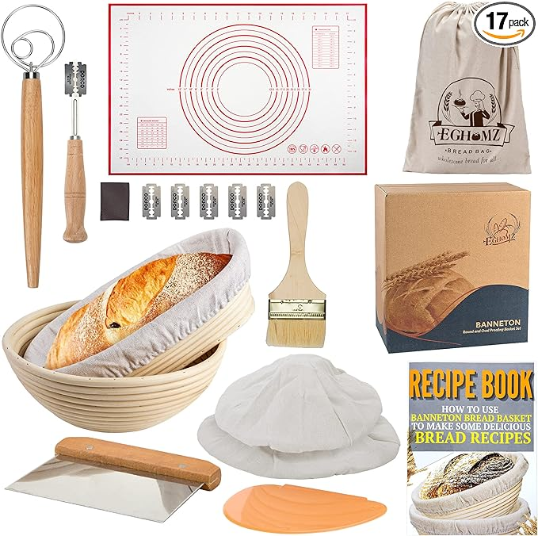

Everything you need for Beginner's Sourdough
The perfect bread to get started baking is sourdough bread at home. This crusty, crunchy, and absolutely delicious loaf of bread is perfect for any lunch.
The perfect bread to get started baking is sourdough bread at home. This crusty, crunchy, and absolutely delicious loaf of bread is perfect for any lunch.